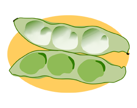

2018年7月号
「蚕豆」これ何て読むの？

先日、「蚕豆」という漢字を見かけましたが、何と読むかお判りですか？
ヒントは「初夏が旬」の食材です！
答えは、一般的な漢字では「空豆」と書きますが、「蚕豆」とも書く「お豆」＝「ソラマメ」のことです。
「空豆」の語源・由来は、長楕円形のサヤが、「空に向かって直立する」ことからこのような言葉となったようですが、漢名では「蚕豆」と書き、これは「サヤ」が「さなぎになる前の蚕（カイコ）」に似ていることと、「蚕を飼う初夏に食べる豆」という意味があるようです。
ソラマメは、鮮度が落ちやすいデリケートな野菜のため、なるべく早く食べることと、サヤに入っているものを選ぶのがよいといわれています。
その理由は、サヤの内側にありますが、サヤを開くとフワフワした綿のような白い布団にソラマメたちが包まれていますが、実はこのフワフワな白い綿に秘密が隠されています。
ソラマメの綿の役割は、豆を乾燥から守り、栄養分が行き渡るように、やさしく包んでいる、まさにお布団が赤ちゃんたちを守っている姿で、お豆は綿のお布団に守られながら、良質なたんぱく質はもちろん、「代謝ビタミン」とも言われる「ビタミンB群」やカリウムなどを含んでいる優れた野菜となり、代謝のサポートや疲労回復に期待が持てます。
そして何といっても食べ方のおススメは、「焼きソラマメ」ですが、ポイントはこれまたサヤにあり、お豆の香りと味を堪能した後は、サヤに付いている白い綿をスプーンなどですくって食べてください。
どんな美味しさかは、これを体験した人しか解りませんよ（笑）
どうぞ、旬の「蚕豆」を白い綿とともにご賞味あれ！！